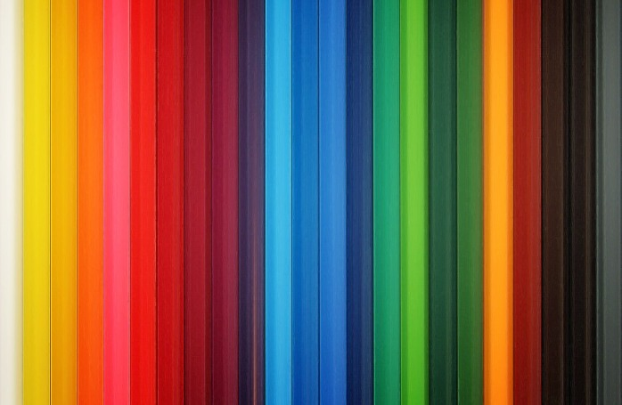

Для багатьох людей колір є основним елементом дизайну. Колір відповідає за атмосферу в будинку. Він здатний заспокоювати або дратувати, піднімати настрій або пригнічувати, чарувати або наганяти нудьгу, вітати або відштовхувати. Вчені вважають, що колір вносить до 90 відсотків інформації, на основі якої людина формує рішення щодо продукту.
Психологія кольору допомагає привернути увагу людей, покращити сприйняття інформації, посилити емоційні реакції, підштовхнути до прийняття рішень і керувати поведінкою.
Інтер'єр – це не просто облаштування простору, але і важливий аспект, який впливає на емоційний стан та настрій людини. Один із ключових факторів, що формує атмосферу в приміщенні, – це колір. Розглянемо, як різні кольори в інтер'єрі можуть впливати на психіку та самопочуття, яким варіантом комбінування відтінків варто надати перевагу, щоб відчувати комфорт і затишок у приміщенні.
Під час вибору того чи іншого відтінку для оформлення інтер’єру варто враховувати наступні ключові рекомендації:
- Поєднання температури відтінків. В інтер’єрі обов’язково повинні бути присутні і холодні, і теплі кольори. Найчастіше головним вибирають колір із однієї температурної гами, а в якості акцентів використовують протилежні по температурі тони.
- Освітлення. Сприйняття температури кольору залежить від природного освітлення. Приміщення з південними вікнами, де є надлишок природного світла і тепла, не варто оформлювати в надмірно теплій гамі. Натомість, в кімнаті з вікнами, що розташовані на північ і спостерігається недолік світла, навпаки, не потрібно зловживати великою кількістю холодних відтінків.
- Прийом візуального збільшення. Світлі, холодні тони візуально збільшують розміри об’єктів, а темні і теплі предмети та, приміром, стіни у приміщенні, навпаки, здаються меншими. Тому у маленьких кімнатах рекомендовано використовувати більше світлих нейтральних тонів.